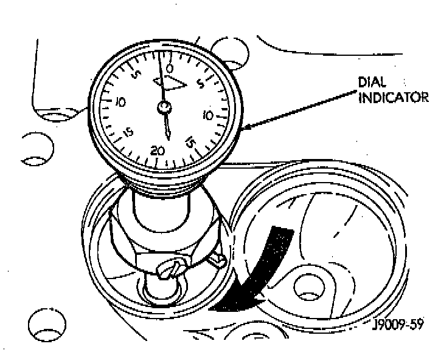

Valve Seat: Service and Repair

1. Install a pilot of the correct size in the valve guide bore. Reface the valve seat to the specified angle with a good dressing stone. Remove only enough metal to provide a smooth finish.
2. Use tapered stones to obtain the specified seat width when required.
3. Control valve seat runout to a maximum of 0.0635 mm (0.0025 inch).